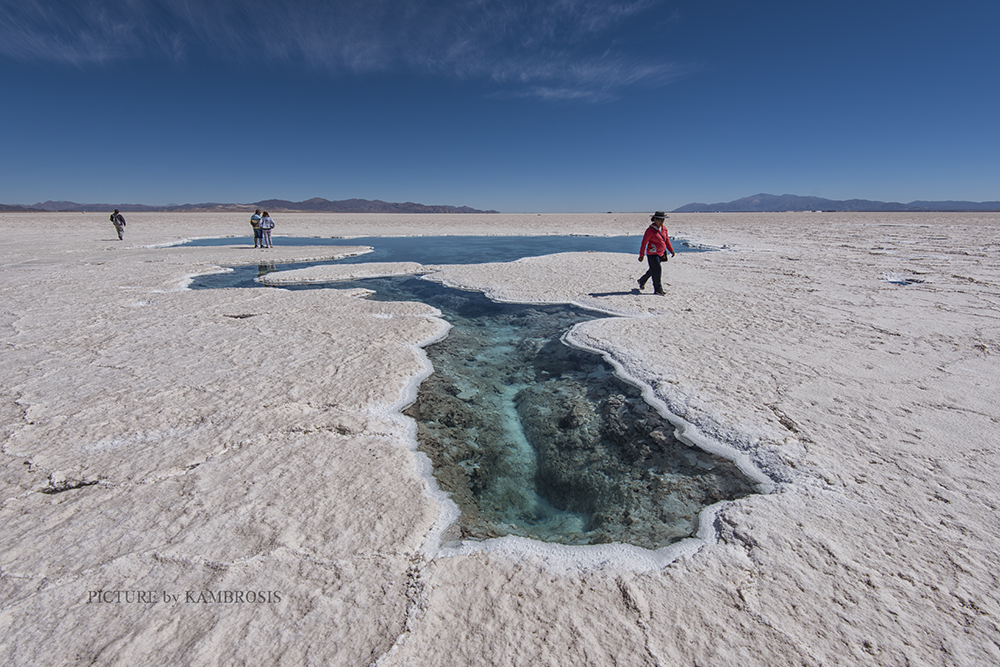

Entre los atractivos turísticos de la provincia se encuentra la Quebrada de Humahuaca, declarada en el año 2003 "Patrimonio Natural y Cultural de la Humanidad" por la UNESCO. Se destaca por su belleza paisajística y su rico patrimonio cultural. Los principales atractivos turísticos de la zona son el Pucara de Tilcara, el cerro de Siete Colores en Purmamarca, el Monumento a los Héroes de la Independencia en Humahuaca y la serranía del Hornocal ubicada a 25 km de la ciudad de Humahuaca. La zona de la puna es una región caracterizada por la aridez propia del altiplano. En ella se encuentran salinas, volcanes y géiseres. El Monumento natural Laguna de los Pozuelos y la Reserva Provincial de la Laguna de Guayatayoc forman parte de esta región. La zona de yunga, caracterizada por la importante biodiversidad, incluye el parque nacional Calilegua.